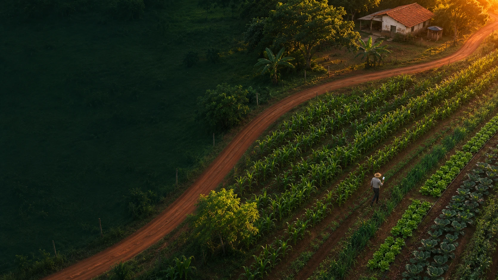
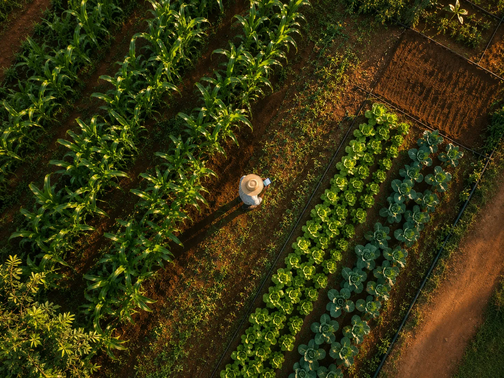
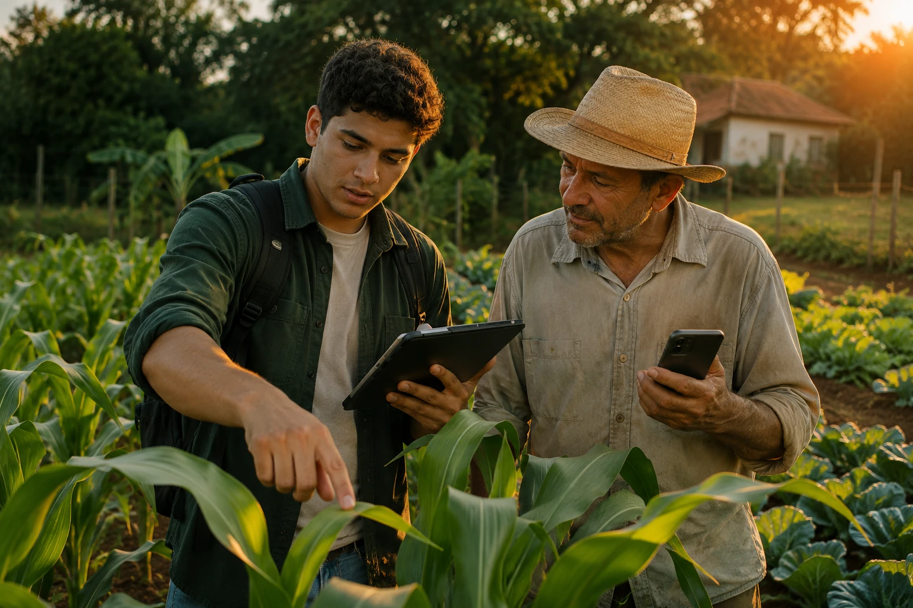
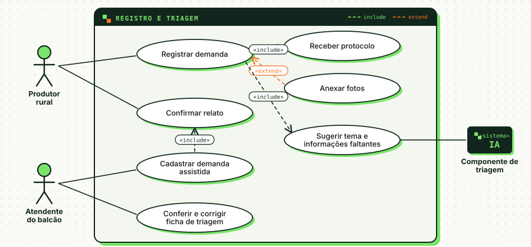
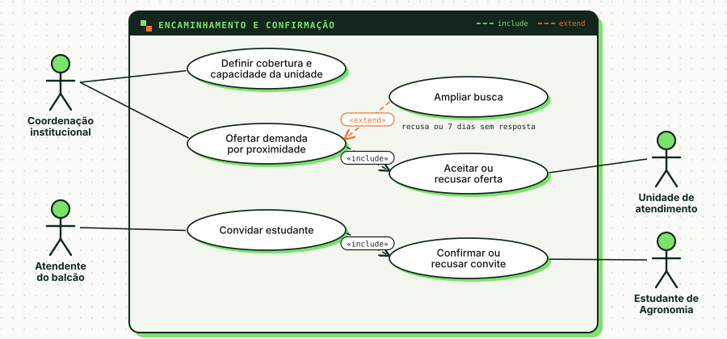
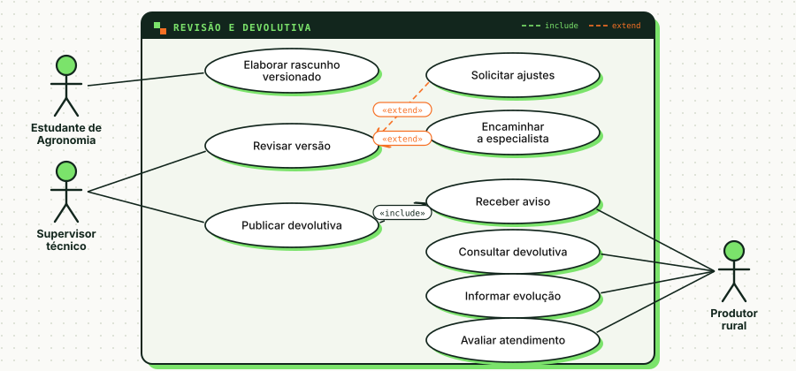
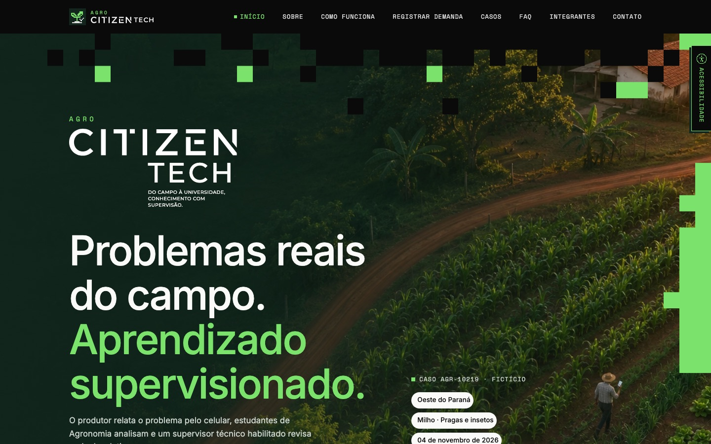
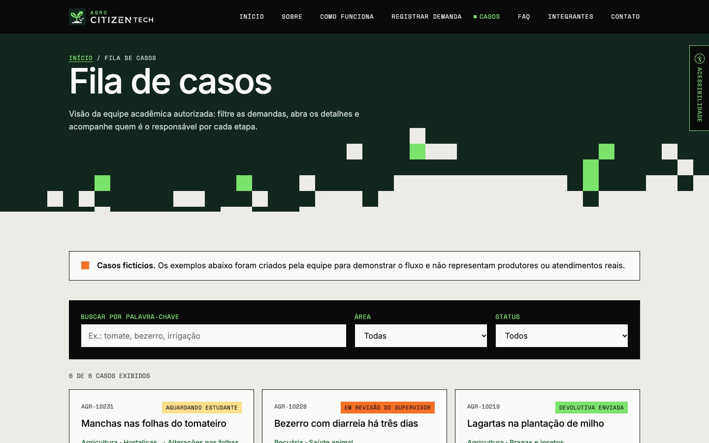
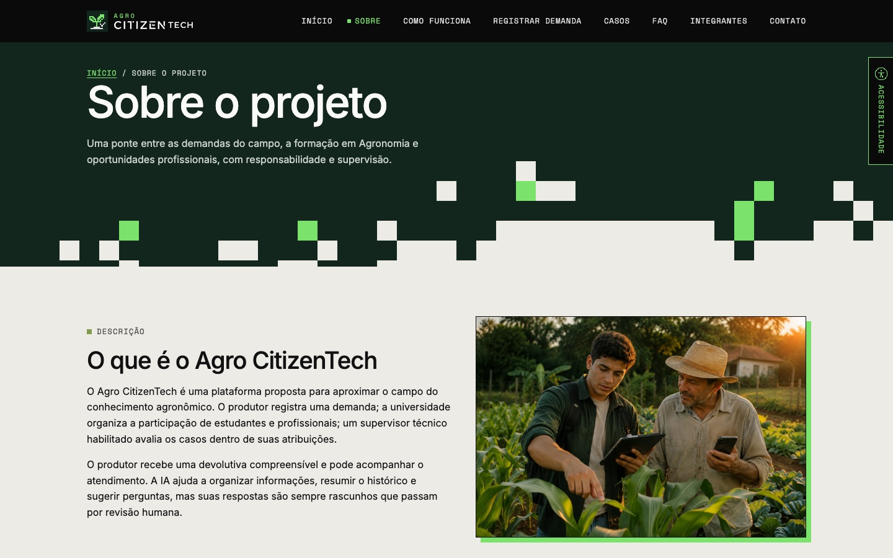

Início / Apresentação
Software Engineering and Business ModelApresentação da solução
Os 16 slides que a equipe nextGen apresenta para a banca: problema, modelo de negócio, backlog, casos de uso e protótipo. Os dados do protótipo são fictícios.
Apresentar em tela cheiaSlides

Conhecimento que chega ao campo.
Uma ponte entre pequenos produtores, estudantes de Agronomia e instituições de ensino.
Global Solution 2026/2 · CitizenTech · 1TDSPA-26
Pouco acesso à orientação técnica no campo
20,2%dos estabelecimentos agropecuários recebiam orientação técnica em 2017.
5/10estudantes da amostra não fizeram prática com produtores nos últimos 12 meses.
De um lado, produtores com dúvidas urgentes. Do outro, estudantes que precisam de prática.

Atendimento supervisionado, do relato à devolutiva
Triagem
Regras e IA sugerem. Uma pessoa confere.Encaminhamento
Prioridade por proximidade e capacidade.Confirmação
A unidade aceita e o estudante confirma.Revisão
Rascunho versionado e aprovação técnica.Retorno
Devolutiva, aviso, evolução e avaliação.Regra de segurança: a IA só apoia a triagem. A devolutiva técnica é publicada apenas depois que um supervisor aprova a versão.
O que o pequeno produtor precisa

Persona fictícia: Seu AntônioTomate · interior de SP
“Vejo manchas nas folhas, mas não sei a quem pedir orientação. E o sinal de internet nem sempre ajuda.”
Dores
- Distância de serviços técnicos
- Formulários difíceis
- Não saber o status do pedido
Ganhos
- Cadastro assistido
- Protocolo e avisos por SMS
- Retorno supervisionado
Modelo de negócio e proposta de valor
Segmentos
- Pequenos produtores
- Estudantes de Agronomia
- Instituições de ensino
- Supervisores técnicos
Atendimento organizado para o produtor. Prática supervisionada e verificável para o estudante.
Para a instituição: extensão com capacidade, histórico, versões e rastreabilidade.
Canais
- Site responsivo
- Chatbot e balcão
- SMS, e-mail e painel
Recursos e parceiros
- Instituições de ensino
- Balcão e supervisão
- Banco relacional
Relacionamento
- Protocolo e status
- Revisão humana
- Avaliação privada
Quem paga e quem se beneficia
Produtor
Triagem, devolutiva supervisionada e acompanhamento básico sem cobrança direta.Instituição parceira
Custeia o atendimento, organiza a capacidade e coordena a supervisão.Extensão
Prática para estudantes, histórico e aproximação com a região.Custos previstos: hospedagem, armazenamento, notificações, balcão, supervisão e eventual uso de IA.
Serviços extras: visitas ou exames têm custo informado antes e são sempre opcionais.
Quatro sprints no Trello
Site navegável
Identidade visual, página inicial, páginas institucionais e menu.
US01 – US04Registro e triagem
Formulário de demanda, ficha de triagem e rascunho salvo.
US05 – US07Fila e acessibilidade
Fila de casos, FAQ, contato, acessibilidade e os RNFs medidos.
US08 – US13 · RNF01–03Operação completa
Encaminhamento, confirmação, revisão, avisos, chatbot e banco.
US14 – US30 · RNF04Cada diferencial aponta para o backlog
Triagem assistida com revisão humanaUS06 · US07 · US27
Encaminhamento por proximidade e capacidadeUS18 · US19
Confirmação do estudante antes da atividadeUS20
Devolutiva só de versão aprovadaUS21 · US30
Inclusão: balcão, acessibilidade e áudioUS13 · US17 · US28
Acompanhamento, avaliação e selosUS22 · US23 · US24
Registro e triagem

Atores
Produtor, atendente do balcão e IA
- O produtor registra e confirma o relato.
- O atendente faz o cadastro assistido.
- A IA só sugere tema e lacunas.
- Uma pessoa confere e corrige a ficha.
Encaminhamento e confirmação

Fluxo crítico
Proximidade e capacidade decidem a oferta
- A coordenação define cobertura e capacidade.
- A unidade aceita ou recusa a oferta.
- Sem resposta em 7 dias, a busca é ampliada.
- O estudante confirma ou recusa o convite.
Revisão e devolutiva

Controle de qualidade
Nenhuma orientação sai sem supervisor
- O estudante envia um rascunho versionado.
- O supervisor revisa, pede ajustes ou encaminha.
- A publicação avisa o produtor.
- O produtor consulta, informa a evolução e avalia.
As disciplinas montam partes do mesmo sistema
Front-end
Site responsivo com dados fictícios, acessibilidade e triagem por regras.Python
Sistema de demandas com login por perfil e SQLite; API Flask de protótipo.Java
Modelo de domínio: estados da demanda e regra de publicação.Chatbot
Node-RED com Telegram e webchat, com áudio e roteiro guiado.Banco Oracle
25 tabelas e 39 chaves estrangeiras para demanda, revisão e histórico.Limite declarado: os componentes mostram a arquitetura, mas ainda não estão integrados de ponta a ponta.
Protótipo navegável



- 8 páginas em HTML, CSS e JavaScript
- Triagem por palavras-chave com rascunho salvo
- Fila de casos com filtros e modal
- Menu de acessibilidade
O que o site já faz
Triagem enquanto escreve
Regras de palavras-chave simulam a IA. O rascunho fica salvo no navegador.
Filtro e detalhes
Filtros combinados sem recarregar e modal acessível por teclado.
Ajustes de leitura
A escolha fica salva e vale para todas as páginas.
Requisitos não funcionais testados
Sem rolagem horizontal
8 páginas em 390×844, 768×1024 e 1440×900.Imagens com alt
E 15 de 15 campos com label. Menu, formulários e modal funcionam só com teclado.Pitch narrado
Abaixo do limite de 3 minutos, com imagens reais do protótipo.Dados do protótipo: 100% fictícios.
Pesquisa com estudantes: exploratória, 10 respostas.
Extensão que organiza o atendimento e transforma aprendizado em impacto.
Renato Dagnolo RodriguesRM 574993 · banco de dados
Lucas Gabriel ScomparinRM 575112 · Python
Ryan Jeimysson Matos de JesusRM 575552 · front-end
Laura de Lucena FerresRM 576007 · chatbot
Diego Amador Limachi AguilarRM 574630 · Java
1 / 16
Setas: navegar · N: notas · F: tela cheia
Notas do apresentador
Índice dos slides
Roteiro
Quem apresenta cada parte
| Integrante | Slides | Conteúdo |
|---|---|---|
| Renato Dagnolo Rodrigues | 1–3 | Abertura, problema e jornada da solução |
| Lucas Gabriel Scomparin | 4–6 | Mapa de empatia, Business Model Canvas e custeio |
| Diego Amador Limachi Aguilar | 7–9 | Backlog, rastreabilidade e caso de uso 1 |
| Laura de Lucena Ferres | 10–12 | Casos de uso 2 e 3 e coerência técnica |
| Ryan Jeimysson Matos de Jesus | 13–16 | Front-end: protótipo, funções em ação, testes e encerramento |